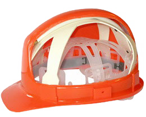

Сигнализатор напряжения индивидуальный касочный «Радиус»
Сигнализатор напряжения «Радиус» оснащен устройством автоматического включения (установленный датчик движения срабатывает при любом перемещении каски) и отключения (при покое каски), что повышает его надёжность, снижает энергопотребление, даёт возможность стационарно устанавливать сигнализатор «Радиус» в каску на длительный срок (2 года; если нужно, то на весь срок службы сигнализатора).
Сигнализатор «Радиус» не имеет кнопки включения-отключения.
СНК остаётся во включенном состоянии в течение всего времени пользования.
При всех достоинствах ручных сигнализаторов есть ряд моментов, на которые следует обратить внимание специалистов в области электробезопасности (смотрите ниже).
Порядок применения СНК “Радиус” смотрите в Руководстве по эксплуатации (РЭ).
Особенности применения и конструкции

- Cигнализатор напряжения “Радиус” 2 расположен внутри защитной каски 1. Он осуществляет контроль напряженности электрического поля. При превышении ее установленного уровня, срабатывает звуковая индикация внутрь защитной каски.
- Cигнализатор представляет собой гибкую вставку, фиксируемую враспор внутри каски (между куполом и оголовьем) с помощью вилок 5. На вставке закреплены батарейный отсек 4 и кнопка 3 (проверка исправности сигнализатора).
- По сравнению с традиционно применяемым креплением СНК снаружи каски (на козырьке или сбоку) установка СНК «Радиус» внутри дает следующие преимущества:
- исключена возможность зацепов и срыва сигнализатора с каски;
- сигнализатор защищен поверхностью каски от внешнего воздействия атмосферных осадков;
- длинная антенна, проходящая по всему ребру жесткости каски, обеспечивает широкую зону контроля электрического поля.
- звуковой сигнал направлен внутрь каски, что позволяет значительно снизить требуемую для надёжного восприятия мощность сигнала. - Сигнализатор «Радиус» имеет режим повышенной чувствительности, что позволяет с его помощью производить предварительную проверку с земли наличия напряжения на проводах ВЛ.
- Предусмотрен самоконтроль сигнализатора при помощи кнопки 3 (убран дежурный режим периодической подачи звукового сигнала, который «напрягает» при выполнении работ). В случае разряда элемента питания СНК непрерывным звуковым сигналом известит о необходимости его замены.
Характеристики:
| Форма сигнализации | Звуковая |
| Контролируемое сигнализатором напряжение электроустановки, кВ, не менее | 6-10 |
| Расстояние срабатывания до проводов ВЛ, находящихся под напряжением 6-10 кВ, м, не менее | 2 |
| Продолжительность работы сигнализатора напряжения от одного элемента питания , мес., не менее |
12 |
| Номинальное напряжение источника питания (дисковый литиевый элемент типа CR2450), В | 3 |
| Масса сигнализатора напряжения (без каски), г, не более | 75 |
| Температурный диапазон, °С | -45 ... +40 |
| Срок службы, лет, не менее | 6 |
Преимущества размещения сигнализатора внутри каски
При всех достоинствах ручных сигнализаторов есть ряд моментов, на которые следует обратить внимание специалистов в области электробезопасности:
- Так, наличие у работника сигнализатора напряжения еще не гарантирует того, что прибор будет правильно использоваться. Бывают случаи, когда электромонтер не использует сигнализатор по разным причинам. В таких случаях задачу предупреждения работника решает касочный сигнализатор напряжения.
- Существующие касочные сигнализаторы напряжения крепятся различными способами на наружной поверхности каски, либо на козырьке, либо на боковой поверхности. Исследования и расчеты электрических полей с учетом тела человека, проведенные группой ученых НПЦ «Электробезопасность» Вятского Государственного Университета, показали, что правильней было бы располагать чувствительный элемент (антенну) сигнализатора напряжения на «макушке» каски.
- Расположенный в других местах каски сигнализатор может не сработать в опасной близости от токоведущих частей. Например, при подъеме монтера на опору, когда его голова находится на расстоянии не более 20 см. от опоры. Кроме того, закрепленный на поверхности каски сигнализатор может быть легко оторван или поврежден в результате соприкосновения с проводом, элементом опоры или др.
- Правильнее было бы располагать сигнализатор напряжения внутри каски в верхнем ребре жесткости. Учитывая все это, специалистами группы «Электробезопасность» был разработан новый касочный сигнализатор напряжения «Радиус».
Разработка и сертификация
Сигнализатор напряжения индивидуальный касочный "Радиус" сертифицирован. Декларация о соответствии ЕАЭС № RU Д-RU.РА01.В.94735/21 от 27.09.2021 г.
Гарантийный срок эксплуатации – 2 года со дня отгрузки с предприятия-изготовителя.
Сигнализатор устанавливается в каски UVEX, PELTOR, Суксунского ОМЗ и другие аналогичные каски. Сигнализатор и способ его крепления запатентован.